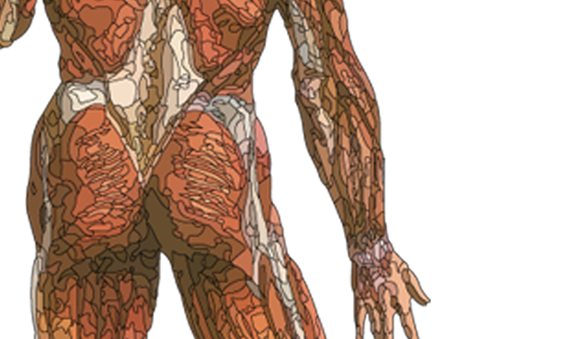
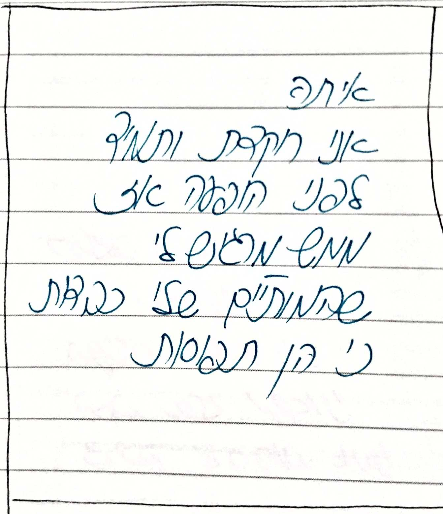
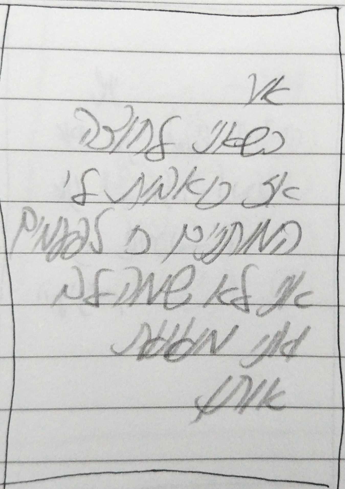
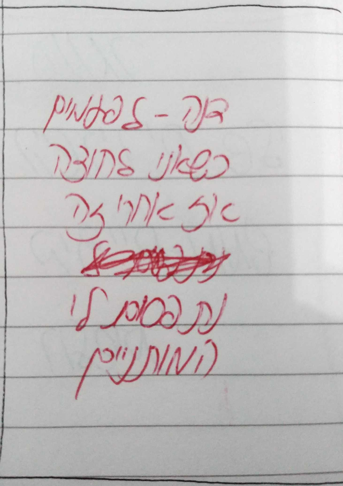

מותניים
בגוף האדם, המותן הוא חלק בבטן הנמצא בין הטבור לבית החזה.
בגוף פרופורציוני, המותן הוא החלק הצר ביותר בגו. קו המותניים מתייחס לקו האופקי הצר ביותר בין שני המותניים.
בדרך כלל אצל נשים היחס בין רוחב האגן לקו המותניים גדול יותר מאשר אצל גברים.
היקף המותניים של אדם מצביע על מידת ההשמנה שלו.



